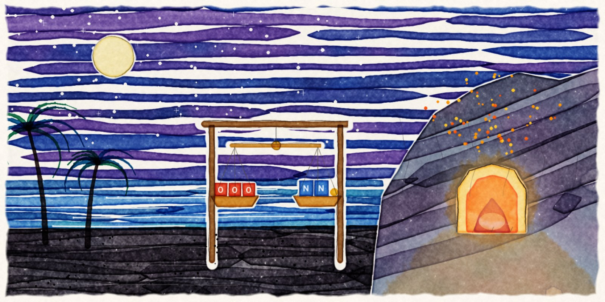

Where the smiths weigh everything with two kinds of weights, and a legend says any weight can be balanced.
Night. The crew's boat scrapes onto black sand. Sparks drift up from a forge built into the cliff.
Kevin: Two days off Ammonia Bay and we still haven't proved a thing. We just keep guessing.
Ana: Guessing is how prophecies start. Proving is how they end.
A masked figure steps out of the smoke. El Gran Pesado, sleeves rolled, holding a single iron bead.
El Gran Pesado: On this island the smiths own only oxygen weights, five each, and nitrogen weights, seven each. This bead weighs one. Balance it, or your boat stays on my sand.
Mateo (under his breath): One? With fives and sevens? That's impossible.
Lucía: Is it? Nobody said the weights all go on the same pan.
Put weights on either pan. The bead sits on the left.
Sections marked Core are taught on both schedules. Semester sections are taught in class on the semester schedule and are reading on the quarter schedule. Optional code quests can replace Navigator problems on either schedule. On the quarter schedule, Lab notes, Paradox notes, puzzles, Studio corners, strategy questions and Navigator or Cartographer problems are extensions students choose.
Each session is 50 minutes. Both full schedules
A weight on the same pan as the bead counts against it; a weight on the other pan counts for it. So a balance with x oxygen weights and y nitrogen weights is a solution of
(negative means "on the bead's pan").
Pick a confidence for each card before you read the theory. Your choices stay in this browser only. Each card names the section that settles it.
Write d | a ("d divides a") when a = dk for some integer k. For integers a, b not both 0, the greatest common divisor gcd(a, b) is the largest integer that divides both.
Listing divisors works for small numbers and fails fast for big ones. The smiths' trick is to shrink the problem without changing the answer.
If a = qb + r, then gcd(a, b) = gcd(b, r).
Proof. We show the two pairs have exactly the same common divisors; then their greatest ones agree. If d | a and d | b, then d divides a − qb = r. Conversely, if d | b and d | r, then d divides qb + r = a.
Divide, keep the divisor and the remainder, repeat. The last nonzero remainder is the gcd.
Why it stops: the remainders strictly decrease (0 ≤ r < b) and stay nonnegative, and a decreasing list of nonnegative integers cannot go on forever (the well-ordering principle). By Lemma 3.1, every line has the same gcd as the first, and the last pair (18, 0) has gcd 18.
Each remainder is a combination of the two numbers above it. Substitute upward:
For integers a, b not both 0, there are integers x, y with ax + by = gcd(a, b). In fact, gcd(a, b) is the smallest positive number of the form ax + by.
Proof. Let s be the smallest positive value of ax + by (it exists by well-ordering). Divide: a = qs + r with 0 ≤ r < s. Then r = a − qs is also of the form ax + by, and smaller than s, so r = 0 and s | a. Likewise s | b, so s ≤ gcd(a, b). And every common divisor of a and b divides ax + by = s, so gcd(a, b) ≤ s.
A bead of weight t can be balanced with weights a and b if and only if gcd(a, b) | t. Since gcd(5, 7) = 1 and 1 = 3·5 − 2·7, every bead can be balanced: multiply the recipe for 1 by t.
Question. Find gcd(252, 198).
Solution. 252 = 1 · 198 + 54; 198 = 3 · 54 + 36; 54 = 1 · 36 + 18; 36 = 2 · 18 + 0. The last nonzero remainder is the gcd: 18.
Question. Write 18 as 252x + 198y.
Solution. From the steps above: 18 = 54 − 36 = 54 − (198 − 3 · 54) = 4 · 54 − 198 = 4(252 − 198) − 198 = 4 · 252 − 5 · 198. Check: 1008 − 990 = 18.
Question. Balance a bead of 1 with weights 5 and 7.
Solution. 3 · 5 − 2 · 7 = 1: three 5s on one pan, the bead and two 7s on the other. Multiply by c to balance any bead c.
Type an answer and press Check. A hint appears if it is not right yet.
Two numbers on the board. On your turn, subtract any positive multiple of the smaller number from the larger, without going below 0. Whoever makes a 0 wins.
You move first against El Gran Pesado. He never makes a mistake. Some starting pairs are winnable; some are not. Play several, then answer the strategy question below the board.
Call the numbers a ≥ b. If a ≥ 2b, the player to move can always win. Why? When b < a < 2b there is only one legal move. Find the exact rule for who wins; it involves the ratio a/b and a famous number.
Greece, about 300 BCE. Euclid's Elements, Book VII, opens with this exact procedure: repeatedly subtract the smaller number from the larger to find the greatest common measure of two numbers.
China, the Nine Chapters on the Mathematical Art. A method called "mutual subtraction" finds the same common divisor, used there to simplify fractions.
India, 499 CE. Āryabhaṭa's kuṭṭaka ("the pulverizer") runs the same divisions and works backwards through them to solve equations like 5x + 7y = c. That is next week's land.
France, 1844. Gabriel Lamé proved that Euclid's algorithm takes at most about five times as many steps as the smaller number has digits, one of the first analyses of how fast an algorithm runs. The slowest inputs are neighbouring Fibonacci numbers.
Deckhand problems are for everyone. Navigator and Cartographer problems are where you stretch.
Short answers for every Deckhand problem and hints for the Navigator problems open with a click. For unlimited drills with instant checking, use the Practice Deck.
Sew Euclid's algorithm into a quilt: every colour is one step, and the smallest square is the gcd. Try two neighbouring Fibonacci numbers. Open the Studio
These cells run real Python in your browser. The first run loads Python (about 10 MB, once). Edit anything and run again.
Produce half of the forge lemma: every common divisor of b and r also divides qb + r. Three routes, one lab report each. Open the Proof Lab
Where Euclid's algorithm is used: screen shapes, leap years from continued fractions, and the first speed test of an algorithm. Open the Field Station
El Gran Pesado drops the bead on the right pan, three oxygen weights beside it, two nitrogen weights on the left. The beam settles level. He nods once and points out to sea: "Next island. There, the weights cannot go on the bead's pan."